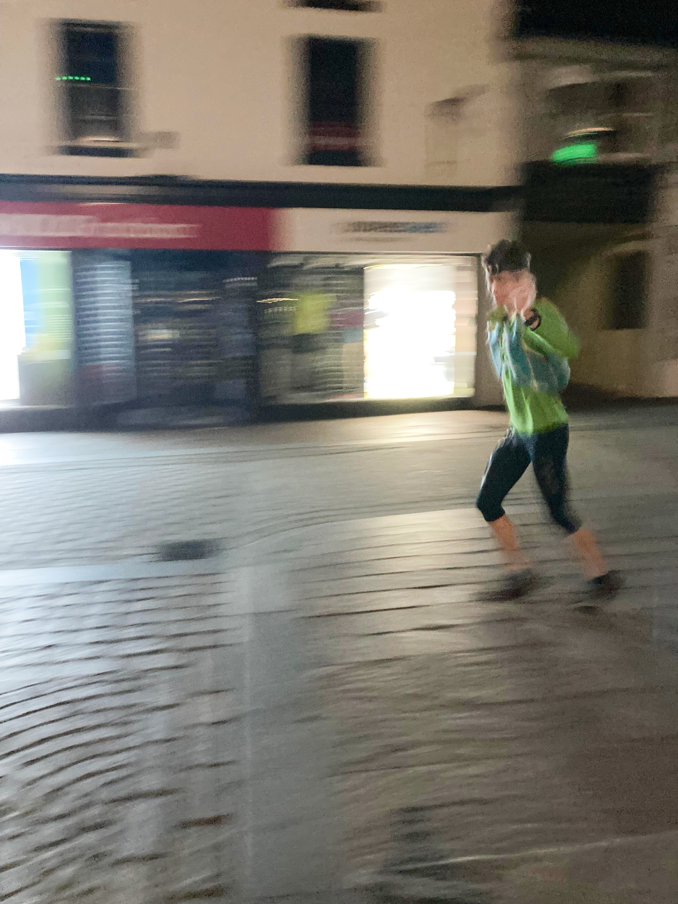
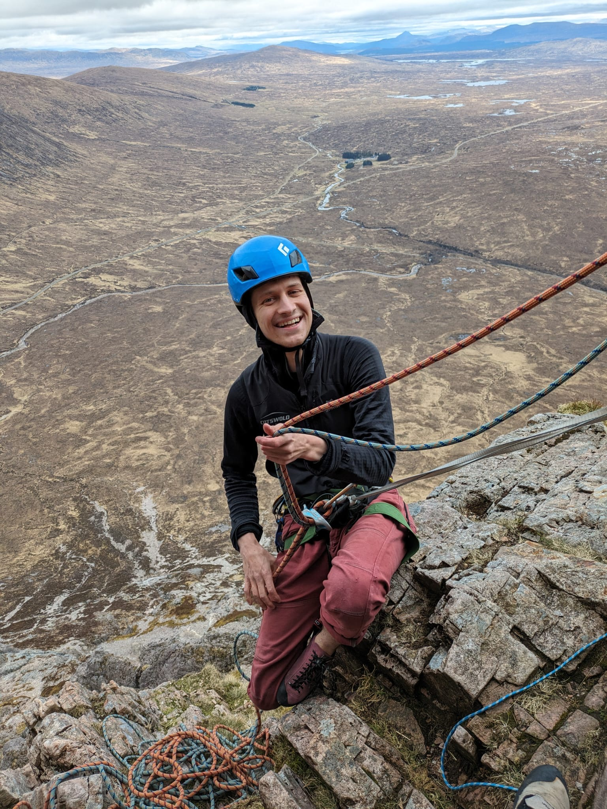

Hot takes on all things outdoor activities
Most of my unncessarily strongly held views are to do with outdoor activities. It is common for climbers to have a strong sense of aesthetic and ethic - typically founded in beliefs passed down through the generations.
This mostly covers my strong views on outdoor equipment. I get particularly upset when people are put off the outdoor by either uncessariyl expensive equipoment or poor equipment that lowers people’s enjoyment of the outdoors.
(Fell) Running

Setting off on the Bob Graham Round (~100km, 8000m elevation gain) wearing shoes from Facebook marketplace, a bag I got for free, and a jumper I've had since I was 12.To run you need shoes and clothes. Running instagram would have you believe you need a special t-shirt, double skin socks, and a brand new Garmin. When I ran the Bob Graham Round I wore a £10 pair of shorts from Decathlon, a running t-shirt I got for free from the mountaineering club, a falling to bits running bag from a Facebook group, a bright green jumper I’d had since I was 12 and a pair of shoes I bought on Facebook marketplace for £15.
New Balance Summit Unknown 2s - discontinued
The best general purpose trail shoes. My Summit Unknown have done >2500 Kms including 100s of kilometers on rough, rocky, mountain terrain. They’re beginning to look a bit worese for wear but amazingly the soles are still in tact and they remain my favourite shoes for trails.
I love them because they’re low to the ground so I don’t twist my ankles when wearing them, have good enough tread for running off-road but not so much that they’re uncomfy on tarmac, and have survived a lot of harsh kilometers.
Trends have changed and New Balance no longer make a good Summit Unkown. If anyone comes across a pair of Summit Unknowns 2s in a UK 5 I will pay good money for them.
Adidas Boston 8s & 9s - discontinued
Pair your Summit Unknowns with Adidas Bostons. A simple, light, comfortable, and low-profile shoe the Adidas Boston 8 and 9 are neutral shoes great for training and racing. They are simple. My Boston 8s did track sessions, road races, and the odd fell race! As per every other shoe Adidas changed the design to add too much stack height. With a little searching you can find old pairs of this perfectly simple shoe.
Decathlon 3" split-shorts - discountinued
Somehow running brands have tricked people into spending £50 on running shorts. Until ~2022 Decathlon sold a pair of perfectly adequate 3" split-shorts for <£10. They were a nice light material, had a small zip pocket, and were comfortable. For some reason Decathlon have replaced these with a pair of shorts that remind me of playing Rugby at school.
Buy the cheapest Garmin
If you run for less then 5 hours at a time then buy the cheapest Garmin - even better buy one on Facebook marketplace. For the last 10 years my running watches have been hand-me-downs from my father. They do the job I want them to do - track my runs and let me upload them to Strava afterwards. Yes their battery life is a bit poor, yes they don’t track my sleep, or provide a map. But all I want is to track my runs. My ideal watch would be a Casio xyz with GPS tracking. It would show me very few metrics and then afterwards upload my GPS trace.
Mountain Things
Showa Temres 282
Also known as “Japense fishing gloves” the Temres 282 is essentially a fleece lined washing up glove. Beloved by mountaineers they are both warm and waterproof.
My favourite 282 annecdote is that Steve House, Patagonia sponsored mountianeer, wears these in preference of any glove Patagonia produce. They’re <£30 and readily replace your >£100 mountaineering gloves. Everyone should own a pair of Temres 282s even if they’re just for emergencies or clearing the snow off the car windscreen.
No-one should wear walking boots!
As kids we were taught that to walk up mountains we must wear walking boots. Without walking boots our ankles would simply collapse and we’d be left to perish in the wilderness. I believe that, because they’re so heavy and uncomfrotable, people are genuinely put off walking by being made to wear walking boots. I hypothesise that more people would enjoy walking if they wore their trainers. The contributing factors are that:
- They’re too heavy. It’s not fun to walk in heavy shoes. Walking boots weigh [y times] more than running trainers.
- They're worn once a year. Because people tend to only wear their walking boots a few times a year they never properly wear them in. This means wearing walking boots can be a perpetual cycle of blisters.
- They dry slowly. Being waterproof is great but as soon as water goes over the top of your boots they’re sodden. If you’re walking for multiple days it can be more useful for your shoes to dry quickly
There is a place for walking boots and I ocassionally enjoy wearing mine.
Headtorches
I’m a bit confused about headtorches. They should be solved! The basic design topology should be an 18650 battery, a simply charge circuit, and a handful of CREE LEDs (run below their power rating to improve efficiency and lifetime). Petzl sell over engineered but very nice headtorches and eBay sells “CREE headtorches” with poor QC. I think the best option is currently an eBay headtorch, but I would like someone to take this basic design and produce them with better quality control.
Climbing
Climbing Shoes
Good climbing shoes are always worth it. Never buy La Sportiva Tarantulas or Scarpa crap things or Black Diamond shit things. They’re bad and they make climbing much less fun. Most new climbers will enjoy climbing in either Scarpa Vapour Vs or La Sportiva Miuras. I find that the Vapours are better for narrower feet and the Miuras better for wider feet. Start there and then develop your own shoe taste - but never buy bad shoes.
Beal Karma

Not a Beal Karma.Nice ropes are nice, but most of the time you just need a Beal Karma. Often sold for ~£1 per meter this cheap rope handles well, looks okay, and last long enough. The great advantage of a Beal Karma is that they’re cheap enough that you can just use them properly. No need to keeping your rope in a rope bag or worrying about it wearing away on the grit. The Beal Karma is a utility rope and the default that everyone should buy.